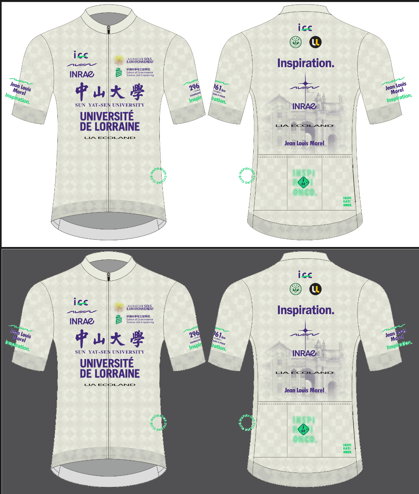

中山大学&洛林大学纪念版骑行服
2024年5月12日，法国洛林大学荣休教授、中山大学客座教授毛磊（Jean Louis Morel）历时36天，完成了从广州中山大学环境科学与工程学院骑行至北京奥林匹克公园的壮举。值此一周年之际，应环境学院土壤研究团队特约设计了毛磊教授纪念版中山大学x洛林大学主题骑行上衣。本次设计将中大地标怀士堂与洛林大学所在法国南锡市地标斯坦尼斯拉斯广场绘入骑行服中，辅以设计团队个人合作伙伴飞鸟AVIAN、法国国家农业研究所INRAe、洛林大学土壤与环境实验室LSE、中大环境学院和中法联合土壤实验室ECOLAND联合呈现。
下面是征集订购的稿件，好看极了，不是吗？

那么问题来了，白色的会不会透肉？不好说，毕竟……之前定制的百年校庆骑行服就……